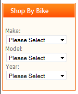
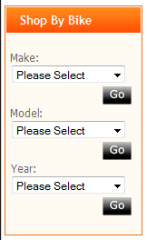

This chart provided in the forums by Jerr may prove useful during setup of your categories - for a larger version, click on picture below or open zencart cat.jpg

License: GPL 2.0 as per included license.txt
Author: mikestaps, converted from Product Finder v0.91, originally developed by Terranetworks for torvista.
Version: 1.0 2011-01-27
27th January 2011
Product Finder Sidebox is a reworked version of the Product Finder Mod. It was only with help from the Zen Cart support forums that I was able to convert this.
Product Finder Sidebox will likely conflict with Product Finder if used together. It uses many of the same files, and css styles. I attempted to make it so there would not be any conflicts if both were for some reason implimented, I couldn't get it to work properly.
ALWAYS remember to back up, back up, back up.
This mod provides three drop-down select boxes which are used to select products from top category - subcat01 - subcat02 - subcat03.
The second and third drop-down are populated dynamically (using jquery) as a result of the choice made in the previous box, in my case this is used as Make-Model-Year.
The mod is designed to work with this category structure:
top-category (eg Bikes) -
sub-category level 1 (eg Bike Manufacturer) -subsub-category level 2 (eg Bike model) -subsubsub-category level3 (eg Bike model year or year range) - which contains the products
Each subcategory is a drop-down.
This chart provided in the forums by Jerr may prove useful during setup of your categories - for a larger version, click on picture below or open zencart cat.jpg
To replace a long static list in a sidebox.
I have two master categories
It shows up like this

and with javascript disabled

IMPORTANT
You have to tell the code which top-level category to start from.
In /includes/functions/extra_functions/product_finder_sidebox.php
around line 56 look for
function zen_get_category_tree($parent_id = '99', $category_tree_array = '') {
The 99 is my top-level category, change it to yours.
BACKUP FILES AND DATABASE - DO NOT INSTALL ON A LIVE SITE!
Copy the files into the correct directories. File placement is correct if you drop all files from the FILES folder into your store directory.
html_header.php - only contains one extra line to load the jquery:
<script type="text/javascript" src="<?php echo $template->get_template_dir('.js',DIR_WS_TEMPLATE, $current_page_base,'jscript')?>/jquery-1.3.2.min.js"></script>
If you are already using jquery then you don't need this line, something similar should already be there..
There are no database changes required.
After install you will see the new sidebox appear in your tools ->Layout boxes controller in the store admin. You can turn on/off the sidebox and determine the position from there.
You will need a top-level category, then a sub 1, then a sub 2, then sub 3 and then an enabled product in sub 3. Untill there is a product in (or linked to)sub 3 nothing will populate the drop down menus.
Put the correct id for the top level category in
/includes/functions/extra_functions/product_finder.php
and the dropdowns should show the sub 1 - sub 2 - sub 3.
The category names should not contain ^ or | symbols. These are used as delimiters within the code.